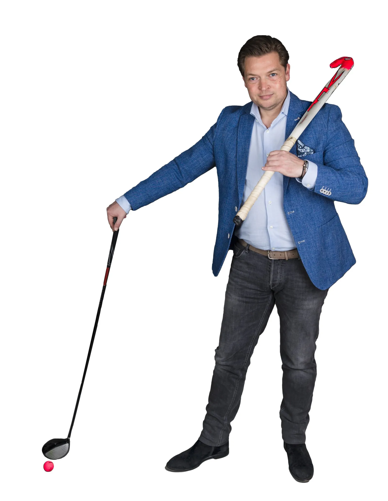

Commerciële ontwikkeling
Salestraining, gesprekstechnieken, onderhandelen, accountmanagement, consultative selling en salesmanagement.
Herkent u dit?
- Commerciële kansen worden onvoldoende benut.
- Verkopers vinden complexe gesprekken lastig.
- Accountmanagers halen te weinig uit klantrelaties.
- Salesmanagers zoeken manieren om hun team beter te laten presteren.